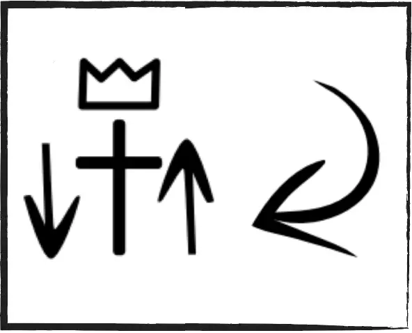

Assess Your Church With the Church Waffle
A simple 12-practice grid that helps your group see what's healthy, what's missing, and what to obey next.
The Church Waffle — 12 practices from Acts 2:36-47
See What Your Church Is Actually Practicing
Most churches can tell you how many people showed up last Sunday. Few can tell you whether they're actually living out what Jesus commanded. The Church Waffle turns that question into something concrete: 12 practices taken directly from Acts 2:36-47, the description of the first church right after Pentecost. Instead of guessing whether your group is "healthy," you check each practice one at a time and ask a straight question — are we actually doing this, or just talking about it?
It works for house churches, small groups, and traditional congregations alike. You don't need special training to use it — just a willingness to look honestly at what's happening in your group.
Attendance Isn't the Same as Health
A full room and strong teaching can hide a lot. A group can gather every week without ever baptizing anyone, praying together, giving generously, or making disciples who make more disciples.
The 12 practices below are how you find out which one you actually have.
12 Practices of a Healthy Church
The same 12 commands of Christ behind every tool at Obey Tools — this is what it looks like when a church actually obeys them.


See Where You Stand
Not sure where your church is strong or weak? Take the 3-minute Church Waffle Health Check and identify the missing practices in your group.
Get the Tools
Three ways to use the Church Waffle — pick what fits your moment.
Church Waffle PDF
The full, print-ready version of the tool. Best for handing out at a gathering or coaching meeting.
Download PDFQuick Reference Guide
A one-page summary of the 12 practices. Built to be read in five minutes, not studied for an hour.
Get the GuideChurch Waffle Health Check
The guided, digital version — it functions as your church's health assessment. Answer 12 questions and see your results instantly.
Open the Health CheckNeed it in another language? See translated resources.
Go Deeper With the Two Church Model
The Church Waffle helps you see what your church is practicing. The Two Church Model helps you think about the structure that allows those practices to multiply.